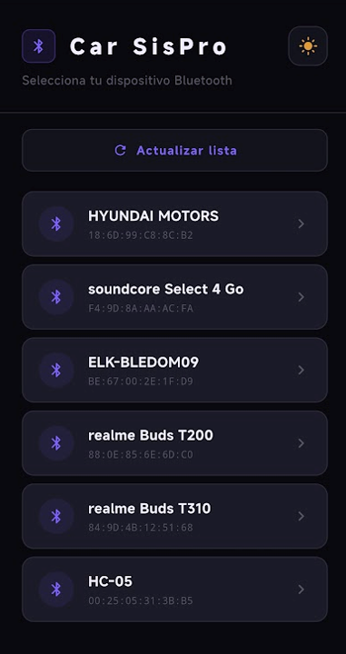
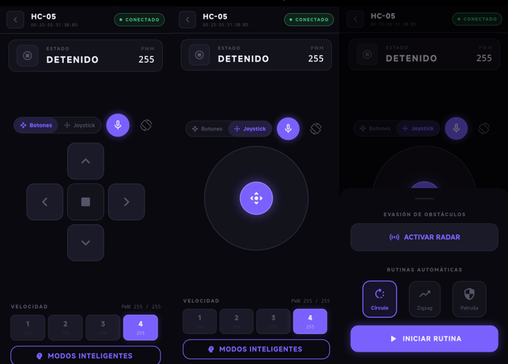
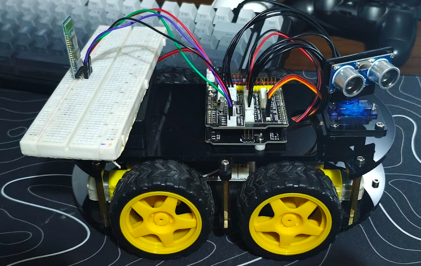

Este proyecto consistió en el armado de un vehículo eléctrico con Arduino, incluyendo la conexión de los componentes electrónicos, el montaje del hardware y la programación del microcontrolador para controlar el movimiento del vehículo.
Se integraron el chasis, los motores, el driver de motores, el módulo Bluetooth, la batería y el cableado de alimentación. Cada componente se probó de forma individual y después en conjunto, verificando el sentido de giro de los motores y la respuesta a los comandos.
El Arduino interpreta los comandos recibidos por Bluetooth y acciona los motores para adelante, atrás, izquierda, derecha y parada. Además se desarrolló una aplicación móvil en Flutter para seleccionar el dispositivo y enviar las instrucciones, integrando electrónica, programación y comunicación inalámbrica.


